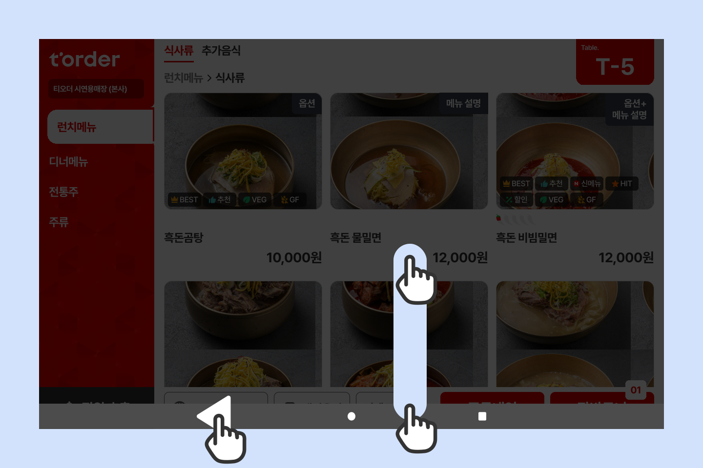
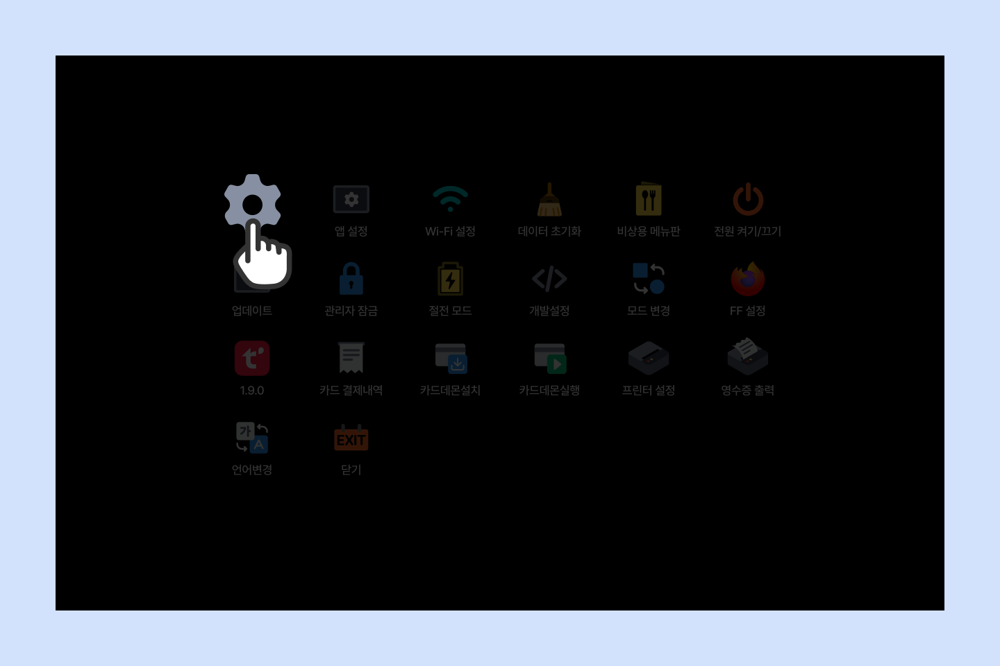
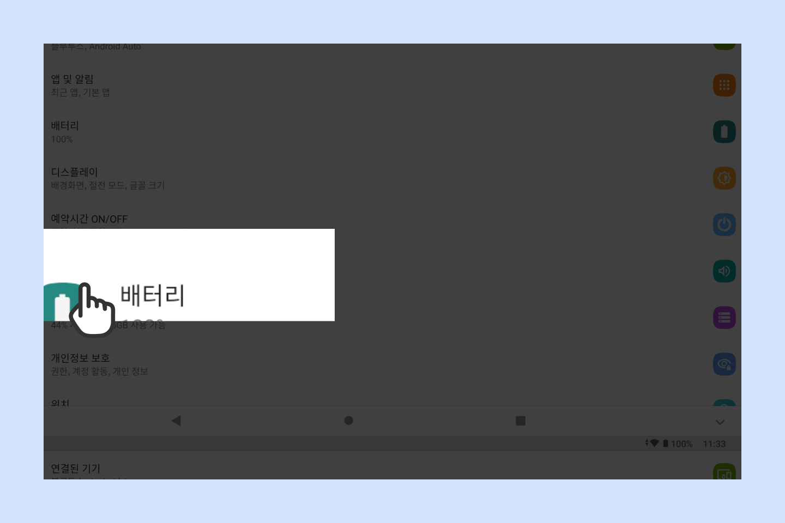
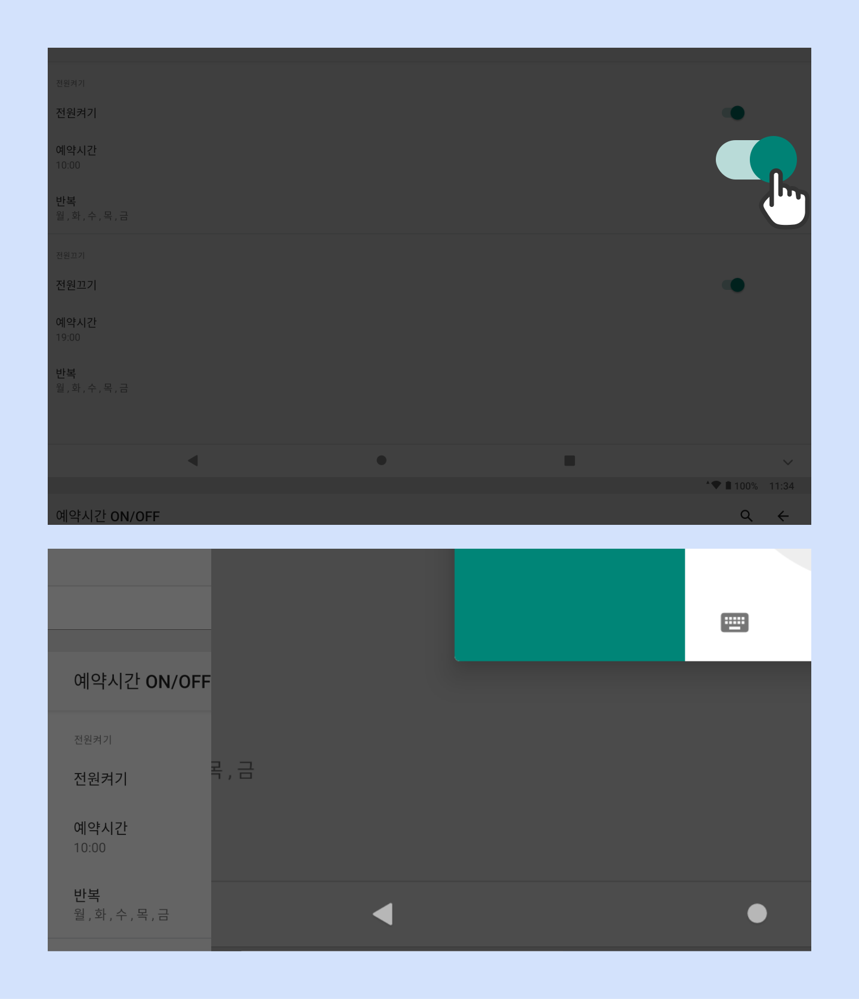

전원 예약 시간 ON/OFF
1
화면 하단을 끌어올려 왼쪽의 화살표 버튼을 빠르게 5번 터치해 주세요.

2
[설정]을 터치해 주세요.

3
태블릿 설정 화면에서 [예약시간 ON/OFF]를 터치해 주세요.

4
전원 켜기/끄기를 오픈 및 마감의 30분 전/후로 설정해주시고,
반복 설정에서 영업 요일에 해당하는 항목에 체크해 주세요.

참고
모든 태블릿의 전원 켜기 예약시간이 동일 할 경우 공유기에 과부하가 걸릴 수 있으니
10대 기준으로 5분씩 간격을 두고 설정해 주세요.
예시 : 1~10번 - 16:30 / 11~20번 - 16:35
해당 기능은 티오더 기능이 아닌 태블릿 기기의 자체적인 기능이며,
오류로 인하여 매장환경마다 해당 기능이 실행되지 않을 수 있어요.
해당 기능을 재설정 할 경우 각각 모든 기기의 타이머 설정이 필요해요.